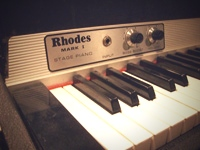
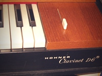

| 피아노 | 설명 | 가격 |
|---|---|---|
 |
로즈 피아노(Rhodes Piano)는 1942년 해롤드 로즈(Harold Rhodes) 에 의해 발명된 전자 기계식 피아노이다. 부상당한 병사들이 병상에 누워서도 연주할 수 있게 고안되었다고 한다. 이후 펜더사에 합류하면서 펜더 로즈라는 이름으로 널리 보급되기 시작한다. 대중음악에서는 60년대를 거치며 허비 행콕, 스티비 원더, 더 도어즈등의 실험적인 키보드 매니아들에 의해 사용되었다. 최근 뮤지션 중에는 디안젤로등이 로즈를 즐겨 사용한다 | $1000 |
|
윌리처 전자 피아노(Wurlitzer electric piano)는 미시시피(Mississippi)에 있는 루돌프 윌리처 사(Rudolph Wurlitzer Company)에 의해 만들어진 전자 기계식 피아노이다. 루돌프 윌리처 사는 미국 회사로 흔히 윌리처(Wurlitzer)라고 부른다. 현악기, 금관악기, 페어그라운드 오르간, 오케스트리언, 전자 오르간, 전자 피아노, 주크박스 등을 생산했다. | $2000 |
 |
Hohner Clavinet D6 클라비아 디지털 뮤지컬 인스트루먼트(Clavia Digital Musical Instruments, Clavia DMI AB)는 스웨덴의 아날로그 신디사이저 및 전자 피아노 제작 회사이다.1983년, Hans Nordelius와 Mikael Carlsson은 스톡홀름에 위치한 그들의 집 지하에서 세계 최초의 상업용 디지털 드럼인 ‘Digital Percussion Plate 1’을 제작하였다. 1994년에는 EPROM을 사용한 네 가지 소리를 재생할 수 있는 ‘ddrum’을 발표하였다. | $3000 |